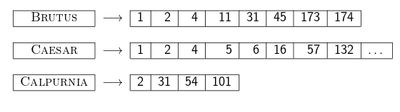

Trabajo Final de Licenciatura
Licenciatura en Sistemas de Información
@earissola - Esteban A. Ríssola
Director: Mg. Gabriel H. Tolosa
JCU - UNLu (2014)
Akshay Java, Xiaodan Song, Tim Finin, and Belle Tseng. Why we twitter: understanding microblogging usage and communities. WebKDD/SNA-KDD '07. ACM. 2007.A form of blogging that lets you write brief text updates (usually less than 200 characters) about your life on the go and send them to friends and interested observers via text messaging, instant messaging (IM), email or the web
Para cada término t se mantiene una lista de todos los documentos que contienen a t.
Junto a cada documento es posible almacenar frecuencia del término en el documento en cuestión, posición en el texto, entre otros.
Listas de Posteo ordenadas por identificador unívoco de cada documento (docID)
Colección de Tweets proporcionados por el NIST (National Institute of Standards and Technology )
Conformada por apoximadamente 16 millones de Tweets
Período de la Muestra: 23/01 - 08/02 de 2011 - 17 Días
Descargados con éxito: 11.601.066 Tweets
Richard McCreadie, Ian Soboroff, Jimmy Lin, Craig Macdonald, Iadh Ounis, and Dean McCullough. 2012. On building a reusable Twitter corpus. (SIGIR '12). ACM. 2012